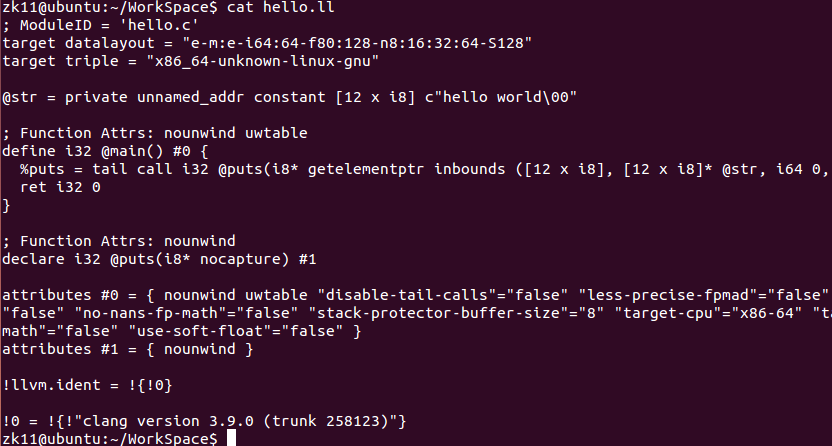
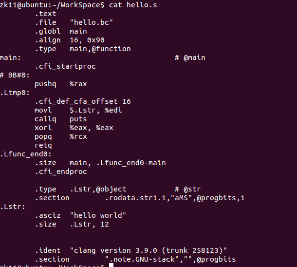
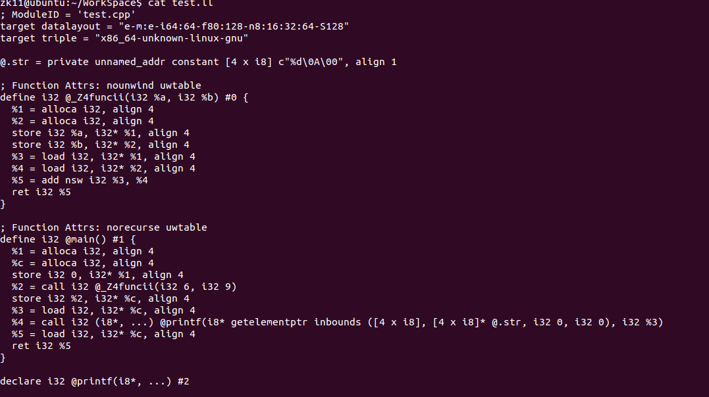
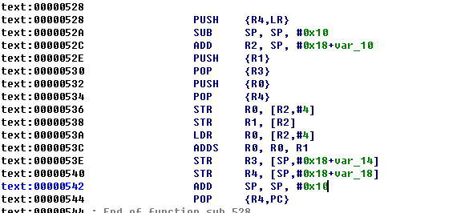
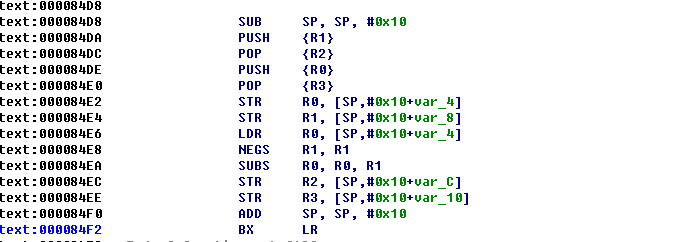

LLVM
LLVM(low level virtual machine)是一个先进的编译器框架，它提供了一种代码编写良好的中间表示(IR)，可以作为多种语言的后端，还可以提供与变成语言无关的优化和针对多种cpu的代码生成功能。
LLVM的主要架构如下：
- 前端：前端用来获取源代码然后将它转变为某种中间表示，我们可以选择不同的编译器来作为LLVM的前端，如gcc，clang。
- Pass(通常翻译为“流程”)：Pass用来将程序的中间表示之间相互变换。一般情况下，Pass可以用来优化代码，这部分通常是我们关注的部分。
- 后端：后端用来生成实际的机器码，一般情况下不会关注这一部分。
虽然如今大多数编译器都采用的是这种架构，但是LLVM不同的就是对于不同的语言它都提供了同一种中间表示，可以用下面的图片来说明。传统编译器的架构如下：

LLVM的架构如下图：

llc和lli
llc和lli是LLVM中最重要的两个工具，llc用于将IR转换为特定平台的汇编代码，而使用lli我们可以直接执行LLVM IR。lli可以通过解释器或高级选项中的即时(JIT)编译器执行此工作。
安装和使用
在本文中我们主要使用clang来做为前端。首先迁出LLVM:1
2$ cd where-you-want-llvm-to-live
$ svn co http://llvm.org/svn/llvm-project/llvm/trunk llvm
然后迁出clang:1
2
3$ cd where-you-want-llvm-to-live
$ cd llvm/tools
$ svn co http://llvm.org/svn/llvm-project/cfe/trunk clang
迁出编译运行库：1
2
3$ cd where-you-want-llvm-to-live
$ cd llvm/projects
$ svn co http://llvm.org/svn/llvm-project/compiler-rt/trunk compiler-rt
最后编译源码：1
2
3
4$ mkdir build
$ cd build
$ cmake -DCMAKE_BUILD_TYPE:String=Release ../llvm/
$ make
make的时间可能有点长，多核的电脑可以使用1
$make -j2
编译，我单线程make花了大概2个小时。make完成后可以选择使用1
$sudo make install
来安装llvm。安装完成后就可以使用了，创建一个简单的源文件hello.c。1
2
3
4
5#include <stdio.h>
int main(){
printf("hello world\n");
return 0;
}
编译可执行文件1
$clang hello.c -o hello
生成LLVM字节码文件1
$clang -O3 -emit-llvm hello.c -c -o hello.bc
运行可执行文件1
2$./hello
$lli hello.bc
生成LLVM可视化字节码文件1
$clang -O3 -emit-llvm hello.c -S -o hello.ll
可以查看下hello.ll中的内容

反编译字节码文件1
$llvm-dis < hello.bc | less
编译字节码文件为汇编文件1
$llc test.bc -o test.s

更详细的内容可以参考LLVM官方文档 http://llvm.org/docs/GettingStarted.html
IR
LLVM IR是LLVM的中间语言，LLVM与GCC相比更先进的一点就是它的中间语言非常的友好，具有很好的可读性。我们写一个简单的C程序来认识一下LLVM IR的基本语法。
test.cpp:1
2
3
4
5
6
7
8
9
10
11
12
13
14
int func(int a,int b)
{
return a + b;
}
int main()
{
int c;
c = func(6,9);
printf("%d\n",c);
return c;
}
然后使用下面的命令将源文件编译成可读的IR(.ll)文件。
LLVM IR有三种形式，可读的文本形式(.ll)，硬盘上存储的二进制形式(.bc)，内存中的编译器检测和修改的形式。
1 | clang -emit-llvm test.cpp -S -o test.ll |
最后生成的test.ll文件内容如下：

简单解释一下，LLVM IR的标识符有两种，以@开头的表示是全局标识符，以%开头的表示是局部标识符。i32表示32位的整型，也就是4个字节。alloca表示在栈上分配内存。align 4则是按4字节对齐。load和store看字面意思即可知道是装载和写入的意思。比如:1
store i32 1, i32* %a, align 4
表示将1写入到%a指向的地址中去。1
%4 = add nsw i32 %2, %3
这条指令的意思表示将2号和3号寄存器中的两个32位整数相加，然后放到4号寄存器中。(LLVM类型很严格，而且每个参数前面都要先声明类型，所以看上去很啰嗦)
更多LLVM IR的语法可以参考官方文档。http://llvm.org/docs/LangRef.html。
另外LLVM提供了大量的api接口来生成IR，通过这些api，我们可以很方便的设计一门新的语言。感兴趣的可以查询一些编译器相关的内容，比如http://gnuu.org/2009/09/18/writing-your-own-toy-compiler。
Pass
Pass是LLVM中一个很重要的部分，每个Pass都是做优化或者转换的工作，LLVM的优化和转换工作就是由很多个Pass一起完成的。我们通过继承指定的类以及实现相关的虚函数来实现具体的Pass，具体的类型主要有以下几种：
- ImmutablePass
- MoudlePass
- CallGraphSCCPass
- FuncationPass
- LoopPass
- RegionPass
- BasicBlockPass
- MachineFunctionPass
下面我们通过一个简单的示例来介绍一下Pass的编写。因为Pass的编写需要引用LLVM中的其他文件，所以Pass一般分为源码环境内和源码环境外。在源码环境内我们需要在llvm src/lib/Transforms/目录下编写我们的Pass，事实上在这个目录里已经有一个叫Hello的Pass，我们可以直接参考它的写法。不过这里我们主要研究下源码环境外的Pass编写，首先确保你的机器上在编译LLVM后已经使用make install安装LLVM。我们可以从llvm-pass-skeleton下载一个Pass模板，然后按照README.md中的提示编译运行。这是一个非常简单的Pass，它只做了一件事，就是在编译程序的时候打印函数名，主要逻辑都在skeleton.cpp中。1
2
3
4virtual bool runOnFunction(Function &F) {
errs() << "I saw a function called " << F.getName() << "!\n";
return false;
}
然后我们使用1
$clang -Xclang -load -Xclang build/skeleton/libSkeletonPass.* something.c
来运行这个Pass。这里有一点不同的是使用Pass的方式，官方文档中我们运行一个Pass是使用这样的命令:1
$opt -load ../../Debug+Asserts/lib/Hello.so -hello < hello.bc > /dev/null
这里的-hello是我们在编写Pass时注册的选项，比如LLVM自带的Hello Pass里是这样写的：1
static RegisterPass<Hello> X("hello", "Hello World Pass");
但是在skeleton这个项目中，我们看到代码有一点不一样。1
2
3
4
5
6
7static void registerSkeletonPass(const PassManagerBuilder &,
legacy::PassManagerBase &PM) {
PM.add(new SkeletonPass());
}
static RegisterStandardPasses
RegisterMyPass(PassManagerBuilder::EP_EarlyAsPossible,
registerSkeletonPass);
事实上代码中的注释也写清楚了，这样的写法是自动运行这个Pass，详细的说明可以参考http://adriansampson.net/blog/clangpass.html。这里只是简单的介绍了Pass的写法，关于Pass更多的内容，可以参考下面的源码：
与NDK整合
最近在研究obfuscator-llvm这个项目，我发现它将自己写的将pass整合进了llvm，所以我研究了下ollvm这个项目的代码，找到了它的实现方式。
首先新建一个头文件。
1 | $cd llvm/include/llvm/Transforms |
SimplePass.h的内容如下：1
2
3
4
5
6
7
8
9
10
11
12
13
14
// Namespace
using namespace std;
namespace llvm {
Pass *createSimplePass();
}
然后在llvm/lib/Transforms这个目录新建一个文件夹，将我们的Pass放到这里。1
2
3
4
5
6
7$cd llvm/lib/Transforms
$mkdir Obfuscation
$cd Obfuscation
$vim SimplePass.cpp
$vim CMakeLists.txt
$vim LLVMBuild.txt
$vim Makefile
SimplePass.cpp的内容如下，这个Pass只做了一个简单的变换，就是将原程序中的add指令替换成了两个sub。1
2
3
4
5
6
7
8
9
10
11
12
13
14
15
16
17
18
19
20
21
22
23
24
25
26
27
28
29
30
31
32
33
34
35
36
37
38
39
40
41
42
43
44
45
46
47
48
49
50
51
using namespace llvm;
namespace {
struct SimplePass : public FunctionPass {
static char ID; // Pass identification, replacement for typeid
SimplePass() : FunctionPass(ID) {}
bool runOnFunction(Function &F) override {
Function *tmp = &F;
// 遍历函数中的所有基本块
for (Function::iterator bb = tmp->begin(); bb != tmp->end(); ++bb) {
// 遍历基本块中的每条指令
for (BasicBlock::iterator inst = bb->begin(); inst != bb->end(); ++inst) {
// 是否是add指令
if (inst->isBinaryOp()) {
if (inst->getOpcode() == Instruction::Add) {
ob_add(cast<BinaryOperator>(inst));
}
}
}
}
return false;
}
// a+b === a-(-b)
bool ob_add(BinaryOperator *bo) {
BinaryOperator *op = NULL;
if (bo->getOpcode() == Instruction::Add) {
// 生成 (－b)
op = BinaryOperator::CreateNeg(bo->getOperand(1), "", bo);
// 生成 a-(-b)
op = BinaryOperator::Create(Instruction::Sub, bo->getOperand(0), op, "", bo);
op->setHasNoSignedWrap(bo->hasNoSignedWrap());
op->setHasNoUnsignedWrap(bo->hasNoUnsignedWrap());
}
// 替换所有出现该指令的地方
bo->replaceAllUsesWith(op);
}
};
}
char SimplePass::ID = 0;
static RegisterPass<SimplePass> X("test", "simple pass");
Pass *llvm::createSimplePass() { return new SimplePass(); }
Makefile中的内容如下：1
2
3
4
5
6LEVEL = ../../..
LIBRARYNAME = LLVMObfuscation
#LOADABLE_MODULE = 1
BUILD_ARCHIVE = 1
include $(LEVEL)/Makefile.common
CMakeLists.txt中的内容：1
2
3
4
5add_llvm_library(LLVMObfuscation
SimplePass.cpp
)
add_dependencies(LLVMObfuscation intrinsics_gen)
LLVMBuild.txt中的内容：1
2
3
4
5[component_0]
type = Library
name = Obfuscation
parent = Transforms
library_name = Obfuscation
然后我们需要在llvm/lib/Transforms/IPO/PassManagerBuilder.cpp中添加以下代码，首先包含头文件。1
#include "llvm/Transforms/Obfuscation/SimplePass.h"
然后添加如下语句：1
2static cl::opt<bool> SimplePass("simplepass", cl::init(false),
cl::desc("Enable simple pass"));
这段话就是显示在clang -mllvm -help中的选项。
然后在populateModulePassManager这个函数中添加以下代码:1
MPM.add(createSimplePass());
最后在IPO这个目录的LLVMBuild.txt中添加库的支持，否则在编译的时候会提示链接错误。具体内容如下：1
required_libraries = Analysis Core InstCombine IRReader Linker Object ProfileData Scalar Support TransformUtils Vectorize Obfuscation
在Transforms目录下的CMakeLists.txt中添加如下代码：1
add_subdirectory(Obfuscation)
以及LLVMBuild.txt中的subdirectories选项中也添加我们的Pass，如下：1
subdirectories = IPO InstCombine Instrumentation Scalar Utils Vectorize ObjCARC Obfuscation
添加完这些代码后我们就可以编译LLVM了。这样我们编译好的LLVM工具链中就已经包含了我们的Pass。下面我们要将这个工具链和NDK整合到一起方便我们混淆Android原生代码。具体步骤如下，首先到官网上下载最新的ndk开发工具，我这里最新版是android-ndk-r10e。首先进入到toolchains目录新建文件夹。1
2
3
4
5
6$cd android-ndk-r10e/toolchains/
$mkdir obfuscator-llvm-3.9
$cd obfuscator-llvm-3.9
$mkdir prebuilt
$cd prebuilt
$mkdir linux-x86_64
将编译好的llvm工具链下的bin目录和lib目录复制到linux-x86_64目录下。然后将toolchains/llvm-3.6下的config.mk，setup.mk，setup-common.mk复制到obfuscator-llvm-3.9目录下。然后再在toolchains目录新建一个arm-linux-androideabi-clang3.9-obfuscator目录，将arm-linux-androideabi-clang3.6目录下的config.mk和setup.mk复制到arm-linux-androideabi-clang3.9-obfuscator目录下。然后编辑setup.mk中的内容，修改这两行。1
2LLVM_VERSION := 3.9
LLVM_NAME := obfuscator-llvm-$(LLVM_VERSION)
编译好后我们就测试下是否配置成功。首先在任意目录新建一个jni文件夹。然后将前面test.cpp拷贝到这里，新建一个Android.mk内容如下：1
2
3
4
5
6
7
8
9
10LOCAL_PATH := $(call my-dir)
include $(CLEAR_VARS)
LOCAL_MODULE := test
LOCAL_SRC_FILES := test.cpp
LOCAL_CFLAGS := -O0
include $(BUILD_EXECUTABLE)
这里LOCAL_CFLAGS中的-O0是为了防止llvm的代码优化。再新建一个Application.mk，如下：1
2
3APP_MODULES := libtest
APP_ABI := armeabi
NDK_TOOLCHAIN_VERSION := clang3.9-obfuscator
这里的NDK_TOOLCHAIN_VERSION指定编译的工具链为我们刚刚配置的工具链。编写好这些文件或我们在jni文件夹中打开命令窗口，然后输入1
$ndk-build
编译。(请确保已经将NDK路径配置进了环境变量)，我们找到libs目录下生成好的bin文件，用IDA打开，可以看到汇编指令如下：

现在我们再使用SimplePass来编译一次，修改Android.mk，添加如下代码：1
LOCAL_CFLAGS := -O0 -mllvm -simplepass
再看编译后的程序，可以看到指令已经被替换成功了。

这里我们只是演示作用，所以这个pass的作用很简单，并没有起到真正的混淆作用，当然代码混淆是一种很复杂的技术，需要更深的研究才能实现，感兴趣的读者可以推荐阅读OLLVM这个项目的源代码，网上也有相关的论文，比如：LLVM-based Code Obfuscation。
参考文章：
http://www.nagain.com/activity/article/14/
http://fuzion24.github.io/android/obfuscation/ndk/llvm/o-llvm/2014/07/27/android-obfuscation-o-llvm-ndk/
http://blog.quarkslab.com/turning-regular-code-into-atrocities-with-llvm.html
http://adriansampson.net/blog/llvm.html